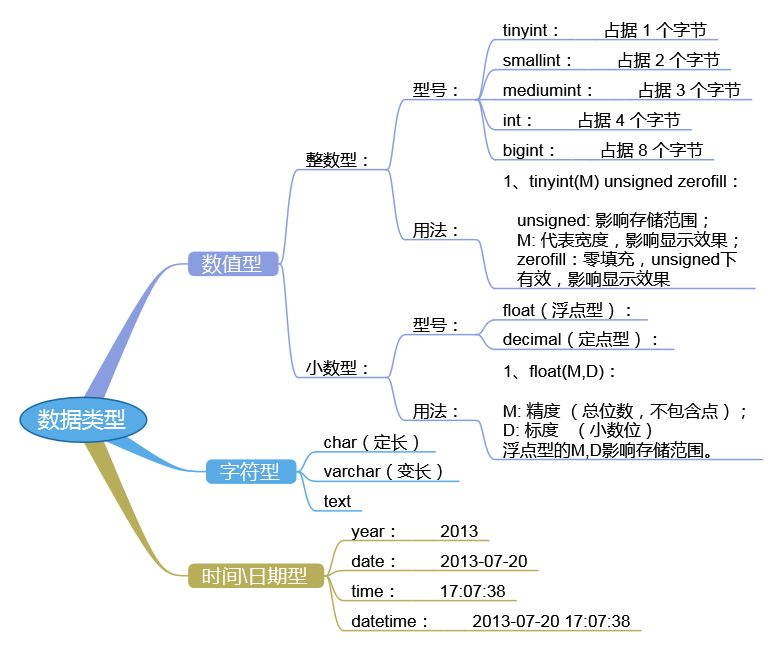

https://dev.mysql.com/doc/refman/5.5/en/data-types.html
选择正确的数据类型对于获得高性能至关重要，三大原则：
更小的通常更好，尽量使用可正确存储数据的最小数据类型
简单就好，简单数据类型的操作通常需要更少的CPU周期
尽量避免NULL，包含为NULL的列，对MySQL更难优化
mySQL中定义数据字段的类型对你数据库的优化是非常重要的。
MySQL支持多种类型，大致可以分为三类：数值、日期/时间和字符串(字符)类型
数值类型
1、整型
| MySQL数据类型 | 含义（有符号） |
|---|---|
| tinyint(m) | 1个字节 范围(-128~127) |
| smallint(m) | 2个字节 范围(-32768~32767) |
| mediumint(m) | 3个字节 范围(-8388608~8388607) |
| int(m) | 4个字节 范围(-2147483648~2147483647) |
| bigint(m) s | 8个字节 范围(+-9.22*10的18次方) |
取值范围如果加了unsigned，则最大值翻倍，如tinyint unsigned的取值范围为(0~255) int(m)里的m是表示SELECT查询结果集中的显示宽度，并不影响实际的取值范围，规定了MySQL的一些交互工具（例如MySQL命令行客户端）用来显示字符的个数。对于存储和计算来说，Int(1)和Int(20)是相同的
2、浮点型(float和double)
| MySQL数据类型 | 含义 |
|---|---|
| float(m,d) | 单精度浮点型 8位精度(4字节) m总个数，d小数位 |
| double(m,d) | 双精度浮点型 16位精度(8字节) m总个数，d小数位 |
设一个字段定义为float(6,3)，如果插入一个数123.4567,实际数据库里存的是123.456，但总个数还以实际为准，即6位
3、定点数
浮点型在数据库中存放的是近似值，而定点类型在数据库中存放的是精确值。在数据库中存放的是精确值,存为十进制
decimal(m,d) 参数m<65 是总个数，d<30且 d<m 是小数位
MySQL5.0和更高版本将数字打包保存到一个二进制字符串中（每4个字节存9个数字）。例如，decimal(18,9)小数点两边将各存储9个数字，一共使用9个字节：小数点前的数字用4个字节，小数点后的数字用4个字节，小数点本身占1个字节
浮点类型在存储同样范围的值时，通常比decimal使用更少的空间。float使用4个字节存储。double占用8个字节
因为需要额外的空间和计算开销，所以应该尽量只在对小数进行精确计算时才使用decimal——例如存储财务数据。但在数据量比较大的时候，可以考虑使用bigint代替decimal
4、字符串(char,varchar,_text)
| MySQL数据类型 | 含义 |
|---|---|
| char(n) | 固定长度，最多255个字符 |
| varchar(n) | 可变长度，最多65535个字符 |
| tinytext | 可变长度，最多255个字符 |
| text | 可变长度，最多65535个字符 |
| mediumtex | 可变长度，最多2的24次方-1个字符 |
| longtext | 可变长度，最多2的32次方-1个字符 |
| BINARY(M) | 固定长度，可存二进制或字符，长度为0-M字节 |
char和varchar：
区别
| 值 | CHAR(4) | 存储需求 | VARCHAR(4) | 存储需求 |
|---|---|---|---|---|
| ‘’ | ‘ ‘ | 4个字节 | ‘’ | 1个字节 |
| ‘ab’ | ‘ab ‘ | 4个字节 | ‘ab ‘ | 3个字节 |
| ‘abcd’ | ‘abcd’ | 4个字节 | ‘abcd’ | 5个字节 |
| ‘abcdefgh’ | ‘abcd’ | 4个字节 | ‘abcd’ | 5个字节 |
请注意上表中最后一行的值只适用不使用严格模式时；如果MySQL运行在严格模式，超过列长度不的值不保存，并且会出现错误
1.char(n) 若存入字符数小于n，则以空格补于其后，查询之时再将空格去掉,
所以char类型存储的字符串末尾不能有空格，varchar不限于此
2.char(n) 固定长度，char(4)不管是存入几个字符，都将占用4个字节，varchar是存入的实际字符数+1个字节（n< n>255)，所以varchar(4),存入3个字符将 占用4个字节
3.char类型的字符串检索速度要比varchar类型的快
varchar和text：
1.varchar可指定n，text不能指定，内部存储varchar是存入的实际字符数+1个字节（n< n>255)，text是实际字符数+2个字节。
2.text类型不能有默认值
3.varchar可直接创建索引，text创建索引要指定前多少个字符。varchar查询速度快于text
5.二进制数据(_Blob)
BLOB和text存储方式不同，TEXT以文本方式存储，英文存储区分大小写，而Blob是以二进制方式存储，不分大小写
BLOB存储的数据只能整体读出
TEXT可以指定字符集，BLOB不用指定字符集
6.日期时间类型
| MySQL数据类型 | 含义 |
|---|---|
| date | 日期 ‘2008-12-2’ |
| time | 时间 ‘12:25:36’ |
| datetime | 日期时间 ‘2008-12-2 22:06:44’ |
| timestamp | 自动存储记录修改时间 |
| YEAR(2), YEAR(4) | 年份 |
timestamp字段里的时间数据会随其他字段修改的时候自动刷新，这个数据类型的字段可以存放这条记录最后被修改的时间